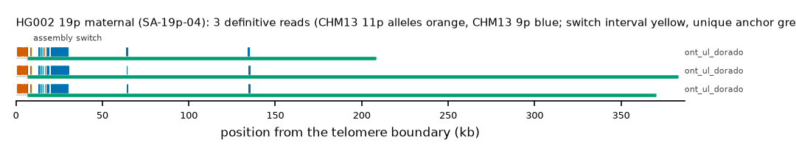

HG002 19p maternal: SA-19p-04
Claim HG002#2#chr19_MATERNAL#L. All claims
- cohort
- HG002 Q100
- individual
- HG002
- haplotype
- maternal
- arm
- 19p
- allele
- SA-19p-04 (foreign)
- model
- donor CHM13 11p, proximal CHM13 9p, recipient CHM13 19p, pattern DP
- claimed end(s)
HG002#2#chr19_MATERNAL#L- assembly switch
- 15,370 bp from the telomere boundary; on CHM13 chr9:21268; own-window projection 8199-8389 bp
- v1 verdict
- confirmed (confirmed)
- definitive tier
- definitive
- reads
- 15 conclusive switch-concordant, 0 discordant, 0 contradicting, 130 consistent; 3 definitive (ont_ul_dorado)
- by tier
- definitive:3;conclusive_shared_anchor:10;conclusive_shared_anchor_off_end:2;consistent:130
- source
- HG002 Q100 v1.1 public read alignments (16 files; 12 independent datasets after molecule de-duplication)

Conclusive and contradicting reads (15)
184 further reads are consistent (switch test passed, but no terminal telomere, anchor or integrity); they are
listed in reads.tsv.gz. Switch: 95% interval in subtelomere coordinates (kb from the
telomere boundary) and projected on CHM13 9p. Each samtools command prints the read's record
from its public file (CRAM: add the CHM13 v2.0 FASTA as -T).
| read | dataset | tier | length | switch (subtelomere, kb) | switch on CHM13 | donor units / purity | proximal units / purity | anchor (CHM13, MAPQ, unique) | own-assembly best end | fetch |
|---|---|---|---|---|---|---|---|---|---|---|
b72d6049-8966-412d-8c84-572cc2e553d2 | ont_ul_dorado | definitive | 372,235 | 6.3-6.5 | chr9:10529-10719 | 41 / 1.00 | 79 / 0.94 | chr19:9398-365820, 60, 161.6 kb | HG002#2#chr19_MATERNAL#L (99.0%) ✓ | samtoolssamtools view -F 0x900 -X 'https://human-pangenomics.s3.amazonaws.com/T2T/HG002/assemblies/polishing/HG002/v1.1/mapping/ont_r10_ul_dorado/hg002v1.1_ont_r10_ul_dorado.pri.bam' 'https://human-pangenomics.s3.amazonaws.com/T2T/HG002/assemblies/polishing/HG002/v1.1/mapping/ont_r10_ul_dorado/hg002v1.1_ont_r10_ul_dorado.pri.bam.bai' 'chr19_MATERNAL:1-45798' | awk -v r='b72d6049-8966-412d-8c84-572cc2e553d2' '$1==r' |
a0674094-705f-49e2-9e4f-f22acdadccd1 | ont_ul_dorado | definitive | 210,274 | 6.3-6.5 | chr9:10529-10719 | 42 / 1.00 | 80 / 0.94 | chr19:9398-212009, 60, 7.8 kb | HG002#2#chr19_MATERNAL#L (98.9%) ✓ | samtoolssamtools view -F 0x900 -X 'https://human-pangenomics.s3.amazonaws.com/T2T/HG002/assemblies/polishing/HG002/v1.1/mapping/ont_r10_ul_dorado/hg002v1.1_ont_r10_ul_dorado.pri.bam' 'https://human-pangenomics.s3.amazonaws.com/T2T/HG002/assemblies/polishing/HG002/v1.1/mapping/ont_r10_ul_dorado/hg002v1.1_ont_r10_ul_dorado.pri.bam.bai' 'chr19_MATERNAL:1-45798' | awk -v r='a0674094-705f-49e2-9e4f-f22acdadccd1' '$1==r' |
65ced107-eb21-42ac-abcf-2599e7c1c108 | ont_ul_dorado | definitive | 384,433 | 6.3-6.5 | chr9:10529-10719 | 42 / 1.00 | 79 / 0.94 | chr19:9398-378035, 60, 173.8 kb | HG002#2#chr19_MATERNAL#L (99.2%) ✓ | samtoolssamtools view -F 0x900 -X 'https://human-pangenomics.s3.amazonaws.com/T2T/HG002/assemblies/polishing/HG002/v1.1/mapping/ont_r10_ul_dorado/hg002v1.1_ont_r10_ul_dorado.pri.bam' 'https://human-pangenomics.s3.amazonaws.com/T2T/HG002/assemblies/polishing/HG002/v1.1/mapping/ont_r10_ul_dorado/hg002v1.1_ont_r10_ul_dorado.pri.bam.bai' 'chr19_MATERNAL:1-45798' | awk -v r='65ced107-eb21-42ac-abcf-2599e7c1c108' '$1==r' |
d1db1300-de9e-4e34-bdb3-7c31b5a63285 | ont_ul_dorado | conclusive, shared anchor | 161,956 | 6.2-6.4 | chr9:10531-10719 | 40 / 1.00 | 79 / 0.94 | chr19:9398-163648, 60, 0.0 kb | HG002#2#chr19_MATERNAL#L (96.8%) ✓ | samtoolssamtools view -F 0x900 -X 'https://human-pangenomics.s3.amazonaws.com/T2T/HG002/assemblies/polishing/HG002/v1.1/mapping/ont_r10_ul_dorado/hg002v1.1_ont_r10_ul_dorado.pri.bam' 'https://human-pangenomics.s3.amazonaws.com/T2T/HG002/assemblies/polishing/HG002/v1.1/mapping/ont_r10_ul_dorado/hg002v1.1_ont_r10_ul_dorado.pri.bam.bai' 'chr19_MATERNAL:1-45798' | awk -v r='d1db1300-de9e-4e34-bdb3-7c31b5a63285' '$1==r' |
2cf169e2-c24c-4bb3-aa22-197b6b79dfaa | ont_ul_dorado | conclusive, shared anchor | 167,454 | 6.3-6.5 | chr9:10528-10719 | 42 / 1.00 | 80 / 0.94 | chr19:9398-168611, 60, 0.0 kb | HG002#2#chr19_MATERNAL#L (99.1%) ✓ | samtoolssamtools view -F 0x900 -X 'https://human-pangenomics.s3.amazonaws.com/T2T/HG002/assemblies/polishing/HG002/v1.1/mapping/ont_r10_ul_dorado/hg002v1.1_ont_r10_ul_dorado.pri.bam' 'https://human-pangenomics.s3.amazonaws.com/T2T/HG002/assemblies/polishing/HG002/v1.1/mapping/ont_r10_ul_dorado/hg002v1.1_ont_r10_ul_dorado.pri.bam.bai' 'chr19_MATERNAL:1-45798' | awk -v r='2cf169e2-c24c-4bb3-aa22-197b6b79dfaa' '$1==r' |
814c1234-99ff-4e42-930c-d4c61dce46c4 | ont_ul_dorado | conclusive, shared anchor | 99,088 | 6.5-6.7 | chr9:10529-10719 | 42 / 1.00 | 73 / 0.93 | chr19:9398-100154, 60, 0.0 kb | HG002#2#chr19_MATERNAL#L (98.8%) ✓ | samtoolssamtools view -F 0x900 -X 'https://human-pangenomics.s3.amazonaws.com/T2T/HG002/assemblies/polishing/HG002/v1.1/mapping/ont_r10_ul_dorado/hg002v1.1_ont_r10_ul_dorado.pri.bam' 'https://human-pangenomics.s3.amazonaws.com/T2T/HG002/assemblies/polishing/HG002/v1.1/mapping/ont_r10_ul_dorado/hg002v1.1_ont_r10_ul_dorado.pri.bam.bai' 'chr19_MATERNAL:1-45798' | awk -v r='814c1234-99ff-4e42-930c-d4c61dce46c4' '$1==r' |
156cd90d-4804-4044-80db-3b96dbb747c0 | ont_ul_dorado | conclusive, shared anchor | 60,819 | 6.3-6.5 | chr9:10529-10719 | 42 / 1.00 | 70 / 0.93 | chr19:9398-61970, 60, 0.0 kb | HG002#2#chr19_MATERNAL#L (99.0%) ✓ | samtoolssamtools view -F 0x900 -X 'https://human-pangenomics.s3.amazonaws.com/T2T/HG002/assemblies/polishing/HG002/v1.1/mapping/ont_r10_ul_dorado/hg002v1.1_ont_r10_ul_dorado.pri.bam' 'https://human-pangenomics.s3.amazonaws.com/T2T/HG002/assemblies/polishing/HG002/v1.1/mapping/ont_r10_ul_dorado/hg002v1.1_ont_r10_ul_dorado.pri.bam.bai' 'chr19_MATERNAL:1-45798' | awk -v r='156cd90d-4804-4044-80db-3b96dbb747c0' '$1==r' |
8e0e94c9-27e3-477b-b8c5-80d1a22a3f73 | ont_ul_dorado | conclusive, shared anchor | 174,233 | 6.4-6.6 | chr9:10529-10719 | 42 / 1.00 | 81 / 0.94 | chr19:9398-175897, 60, 0.0 kb | HG002#2#chr19_MATERNAL#L (99.3%) ✓ | samtoolssamtools view -F 0x900 -X 'https://human-pangenomics.s3.amazonaws.com/T2T/HG002/assemblies/polishing/HG002/v1.1/mapping/ont_r10_ul_dorado/hg002v1.1_ont_r10_ul_dorado.pri.bam' 'https://human-pangenomics.s3.amazonaws.com/T2T/HG002/assemblies/polishing/HG002/v1.1/mapping/ont_r10_ul_dorado/hg002v1.1_ont_r10_ul_dorado.pri.bam.bai' 'chr19_MATERNAL:1-45798' | awk -v r='8e0e94c9-27e3-477b-b8c5-80d1a22a3f73' '$1==r' |
493dcb6d-3f1f-4b82-875c-12636b057bfe | ont_ul_dorado | conclusive, shared anchor | 171,977 | 6.3-6.5 | chr9:10531-10719 | 40 / 1.00 | 80 / 0.93 | chr19:9398-173987, 60, 0.0 kb | HG002#2#chr19_MATERNAL#L (96.1%) ✓ | samtoolssamtools view -F 0x900 -X 'https://human-pangenomics.s3.amazonaws.com/T2T/HG002/assemblies/polishing/HG002/v1.1/mapping/ont_r10_ul_dorado/hg002v1.1_ont_r10_ul_dorado.pri.bam' 'https://human-pangenomics.s3.amazonaws.com/T2T/HG002/assemblies/polishing/HG002/v1.1/mapping/ont_r10_ul_dorado/hg002v1.1_ont_r10_ul_dorado.pri.bam.bai' 'chr19_MATERNAL:1-45798' | awk -v r='493dcb6d-3f1f-4b82-875c-12636b057bfe' '$1==r' |
f99088b6-b8f7-49ea-9aba-ee56bf192918 | ont_ul_dorado | conclusive, shared anchor | 169,184 | 6.3-6.5 | chr9:10529-10719 | 42 / 1.00 | 80 / 0.94 | chr19:9398-171702, 60, 0.0 kb | HG002#2#chr19_MATERNAL#L (99.6%) ✓ | samtoolssamtools view -F 0x900 -X 'https://human-pangenomics.s3.amazonaws.com/T2T/HG002/assemblies/polishing/HG002/v1.1/mapping/ont_r10_ul_dorado/hg002v1.1_ont_r10_ul_dorado.pri.bam' 'https://human-pangenomics.s3.amazonaws.com/T2T/HG002/assemblies/polishing/HG002/v1.1/mapping/ont_r10_ul_dorado/hg002v1.1_ont_r10_ul_dorado.pri.bam.bai' 'chr19_MATERNAL:1-45798' | awk -v r='f99088b6-b8f7-49ea-9aba-ee56bf192918' '$1==r' |
74f20794-3532-4286-b746-f134b1800cda | ont_ul_dorado | conclusive, shared anchor | 68,254 | 6.3-6.5 | chr9:10529-10719 | 42 / 1.00 | 74 / 0.93 | chr19:9398-70359, 60, 0.0 kb | HG002#2#chr19_MATERNAL#L (99.3%) ✓ | samtoolssamtools view -F 0x900 -X 'https://human-pangenomics.s3.amazonaws.com/T2T/HG002/assemblies/polishing/HG002/v1.1/mapping/ont_r10_ul_dorado/hg002v1.1_ont_r10_ul_dorado.pri.bam' 'https://human-pangenomics.s3.amazonaws.com/T2T/HG002/assemblies/polishing/HG002/v1.1/mapping/ont_r10_ul_dorado/hg002v1.1_ont_r10_ul_dorado.pri.bam.bai' 'chr19_MATERNAL:1-45798' | awk -v r='74f20794-3532-4286-b746-f134b1800cda' '$1==r' |
1213a3e7-aac8-45cc-8605-3a5ee7a691fb | ont_ul_dorado | conclusive, shared anchor | 84,198 | 6.3-6.5 | chr9:10529-10719 | 40 / 0.97 | 73 / 0.93 | chr19:9398-86531, 60, 0.0 kb | HG002#2#chr19_MATERNAL#L (98.6%) ✓ | samtoolssamtools view -F 0x900 -X 'https://human-pangenomics.s3.amazonaws.com/T2T/HG002/assemblies/polishing/HG002/v1.1/mapping/ont_r10_ul_dorado/hg002v1.1_ont_r10_ul_dorado.pri.bam' 'https://human-pangenomics.s3.amazonaws.com/T2T/HG002/assemblies/polishing/HG002/v1.1/mapping/ont_r10_ul_dorado/hg002v1.1_ont_r10_ul_dorado.pri.bam.bai' 'chr19_MATERNAL:1-45798' | awk -v r='1213a3e7-aac8-45cc-8605-3a5ee7a691fb' '$1==r' |
a5f73bfe-ca95-4b44-acc6-c65446601c90 | ont_ul_dorado | conclusive, shared anchor | 90,391 | 6.3-6.5 | chr9:10529-10719 | 42 / 1.00 | 74 / 0.93 | chr19:9398-92945, 60, 0.0 kb | HG002#2#chr19_MATERNAL#L (99.0%) ✓ | samtoolssamtools view -F 0x900 -X 'https://human-pangenomics.s3.amazonaws.com/T2T/HG002/assemblies/polishing/HG002/v1.1/mapping/ont_r10_ul_dorado/hg002v1.1_ont_r10_ul_dorado.pri.bam' 'https://human-pangenomics.s3.amazonaws.com/T2T/HG002/assemblies/polishing/HG002/v1.1/mapping/ont_r10_ul_dorado/hg002v1.1_ont_r10_ul_dorado.pri.bam.bai' 'chr19_MATERNAL:1-45798' | awk -v r='a5f73bfe-ca95-4b44-acc6-c65446601c90' '$1==r' |
09f3807f-e081-40e8-be05-d1a007e1b87d | ont_r941_recall | conclusive, shared anchor, another end | 75,111 | 10.5-10.7 | chr9:10534-10719 | 34 / 1.00 | 73 / 0.93 | chr19:9398-73185, 60, 0.0 kb | HG002#2#chr3_MATERNAL#R (93.1%) (not claimed end) | samtoolssamtools view -F 0x900 -X 'https://human-pangenomics.s3.amazonaws.com/T2T/HG002/assemblies/polishing/HG002/v1.1/mapping/ont_methylation_recall_oct2024/03_08_22_R941_HG002.pri.bam' 'https://human-pangenomics.s3.amazonaws.com/T2T/HG002/assemblies/polishing/HG002/v1.1/mapping/ont_methylation_recall_oct2024/03_08_22_R941_HG002.pri.bam.bai' 'chr19_MATERNAL:1-45798' | awk -v r='09f3807f-e081-40e8-be05-d1a007e1b87d' '$1==r' |
329fe71c-74ab-42a8-9c24-1723cf8f5a88 | ont_r941_recall | conclusive, shared anchor, another end | 63,532 | 10.0-10.2 | chr9:10530-10719 | 41 / 1.00 | 71 / 0.93 | chr19:9398-62310, 60, 0.0 kb | HG002#2#chr3_MATERNAL#R (94.7%) (not claimed end) | samtoolssamtools view -F 0x900 -X 'https://human-pangenomics.s3.amazonaws.com/T2T/HG002/assemblies/polishing/HG002/v1.1/mapping/ont_methylation_recall_oct2024/03_08_22_R941_HG002.pri.bam' 'https://human-pangenomics.s3.amazonaws.com/T2T/HG002/assemblies/polishing/HG002/v1.1/mapping/ont_methylation_recall_oct2024/03_08_22_R941_HG002.pri.bam.bai' 'chr19_MATERNAL:1-45798' | awk -v r='329fe71c-74ab-42a8-9c24-1723cf8f5a88' '$1==r' |
Files
CRAM/BAM on CHM13 v2.0, BAM on the person's own assembly windows and the window FASTA: release asset subtel_read_evidence_v1_HG002_Q100.tar.gz, directory read_evidence_v1/HG002_Q100/HG002_2_chr19_MATERNAL_L/ (downloads).
Re-derive this verdict
git clone https://github.com/jlanej/human-subtelomere-atlas && cd human-subtelomere-atlas
evidence/replicate_claim.sh 'HG002#2#chr19_MATERNAL#L'The script fetches the cited reads from the public source by region and read ID, re-runs the frozen criteria and compares every per-read and claim verdict with this page (details).